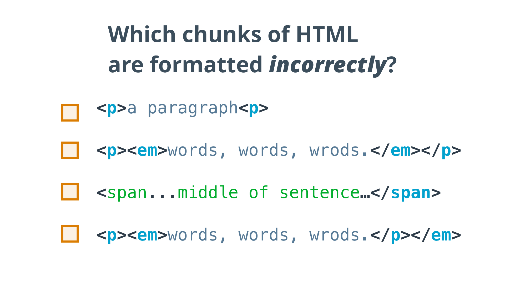

13. 发现 Bug
发现 Bug
Question:
Start Quiz:

Solution:
INSTRUCTOR NOTE:
任务
以下哪些 HTML 代码有 格式错误 ？
-
<p>a paragraph（一个段落）<p> -
<p><em>words, words, wrods.（单词，单词，单词）</em></p> -
<span...middle of sentence（语句中间）...</span> -
<p><em>words, words, wrods.（单词，单词，单词）</p></em>